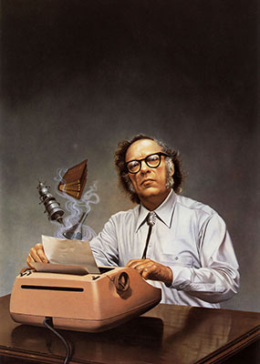
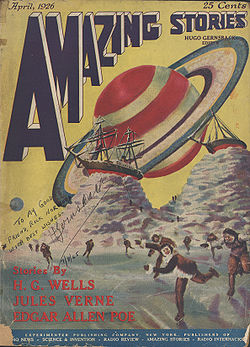

Literatura de ciencia ficción
La ciencia ficción es la denominación popular con que se conoce a uno de los géneros derivados de la literatura de ficción, junto con la literatura fantástica y la narrativa de terror. Nacida como subgénero literario distinguido en la década de 1920 (aunque hay obras reconocibles muy anteriores) y exportada posteriormente a otros medios, como el cinematográfico, historietístico y televisivo, gozó de un gran auge en la segunda mitad del siglo XX debido al interés popular acerca del futuro que despertó el espectacular avance tanto científico como tecnológico alcanzado durante todos estos años.
Con el surgir en 1938 del editor John W. Campbell y su actividad en la revista Astounding Science Fiction (fundada en 1930) y con la consagración de los nuevos maestros del género: Isaac Asimov, Arthur C. Clarke y Robert A. Heinlein, la ciencia ficción empezó a ganar estatus como género literario, especialmente con este último, que fue el primer autor que consiguió que se editaran historias del género en publicaciones más generales, y fue también el que le dio mayor madurez al género e influyó poderosamente en su desarrollo posterior. Otros autores importantes son Philip K. Dick, Frank Herbert, Ray Bradbury y Stanislav Lem.
Temática
Es un género especulativo que relata acontecimientos posibles desarrollados en un marco puramente imaginario, cuya verosimilitud se fundamenta narrativamente en los campos de las ciencias físicas, naturales y sociales. La acción puede girar en torno a un abanico grande de posibilidades (viajes interestelares, conquista del espacio, consecuencias de una hecatombe terrestre o cósmica, evolución humana a causa de mutaciones, evolución de los robots, realidad virtual, existencia de civilizaciones alienígenas, etc.).
Esta acción puede tener lugar en un tiempo pasado, presente o futuro, o, incluso, en tiempos alternativos ajenos a la realidad conocida, y tener por escenario espacios físicos (reales o imaginarios, terrestres o extraterrestres) o el espacio interno de la mente. Los personajes son igualmente diversos: a partir del patrón natural humano, recorre y explota modelos antropomórficos hasta desembocar en la creación de entidades artificiales de forma humana (robot, androide, ciborg) o en criaturas no antropomórficas, dotadas de inteligencia.
Periodos y autores destacados
Una buena parte del género se debe a las obras de una serie de autores ampliamente respetados, tanto dentro como fuera del género, que merecen un claro reconocimiento tanto por sus obras como por su influencia en la obra de autores posteriores. Cabe también mencionar que en muchos casos su imaginación e ideas terminaron calando en la mente de creadores, científicos, ingenieros e inventores de todo tipo de manera que algunas de las tecnologías descritas en muchas de sus obras terminaron por llevarse a cabo de una manera u otra a lo largo de los años. De aquí surgieron ideas como las de los satélites e incluso internet.
La Edad de Oro (1938-1950)
- Aldous Huxley
- C. S. Lewis
- George Orwell
- Isaac Asimov
- Arthur C. Clarke
- Robert A. Heinlein
La Edad de Plata (1951-1965)
- Isaac Asimov
- Arthur C. Clarke
- Philip K. Dick
- Ray Bradbury
- Frank Herbert
- Stanislav Lem
La Nueva Ola (1965-1972)
- William Burroughs
- J.G. Ballard
- Michael Moorcock
- Ursula K. LeGuin
- Philip José Farmer
- Robert Silverberg